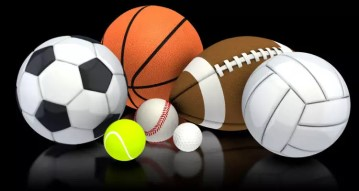

Processos
]

Processos de fabricação dos materiais de cada esporte
Futebol
Bolas de Futebol:
o revestimento das bolas de futebol modernas são geralmente feitas de materiais sintéticos como poliuretano ou PVC. O processo começa com a moldagem dos painéis da bola, que podem variar em número de acordo com o design. Os painéis são então costurados ou termo-soldados para formar a bola. Após a montagem, a bola é revestida com uma camada de material resistente à água e durável, muitas vezes com texturas para melhorar a aderência e o controle. A câmara de ar dentro da bola é geralmente feita de borracha ou látex. Durante o processo de fabricação, a câmara de ar é inserida no interior da bola antes que os painéis externos sejam fechados. Isso é feito para manter a pressão interna da bola e garantir sua forma e desempenho adequados
Chuteiras de Futebol:
A parte superior das chuteiras de futebol é geralmente feita de materiais sintéticos como poliuretano ou couro sintético. O processo de fabricação envolve a moldagem ou corte do material para formar a parte superior da chuteira, que é então costurada, colada ou termo-soldada às solas. Os solados das chuteiras de futebol são feitos de materiais como borracha ou TPU (poliuretano termoplástico). Eles são moldados para fornecer tração e estabilidade em diferentes tipos de superfícies, como grama natural ou sintética. Os solados podem ser projetados com cravos ou travas para melhorar a aderência durante o jogo.
Uniformes de Futebol: Os uniformes de futebol são geralmente feitos de materiais leves e respiráveis como poliéster ou nylon. O processo de fabricação envolve a tecelagem ou tricô do tecido para criar camisas, calções e meias. O tecido é então cortado e costurado para formar as peças do uniforme. Após a fabricação das peças do uniforme, elas são estampadas com os logotipos, números e nomes dos jogadores usando técnicas de impressão por sublimação, serigrafia ou transferência térmica. Isso dá ao uniforme seu visual final e personalizado.
Basquete
Bolas de Basquete:
As bolas de basquete são geralmente feitas de couro genuíno, couro sintético ou borracha de alta qualidade. O processo começa com a moldagem dos painéis da bola, que geralmente são compostos por seis, oito ou até mesmo doze peças. Os painéis são cortados e costurados juntos para formar a bola. Em algumas bolas modernas, os painéis podem ser termo-soldados em vez de costurados. A câmara de ar dentro da bola é geralmente feita de borracha ou látex. Durante o processo de fabricação, a câmara de ar é inserida no interior da bola antes que os painéis externos sejam fechados. Isso é feito para manter a pressão interna da bola e garantir sua forma e desempenho adequados.
Chuteiras de Basquete: A parte superior das chuteiras de basquete é geralmente feita de materiais sintéticos como couro sintético, tecido mesh respirável ou materiais compostos. O processo de fabricação envolve a moldagem ou corte do material para formar a parte superior da chuteira, que é então costurada, colada ou termo-soldada às solas.Os solados das chuteiras de basquete são feitos de borracha de alta qualidade ou materiais compostos para oferecer tração e aderência na quadra. Eles são moldados com padrões específicos de tração para melhorar o movimento multidirecional e a estabilidade durante o jogo.
Atletismo
Sapatos de Corrida:
A parte superior dos sapatos de corrida é geralmente feita de materiais sintéticos ou tecidos leves e respiráveis, como malha de poliéster ou nylon. Esses materiais são cortados e costurados ou colados para formar a estrutura do sapato, proporcionando conforto e suporte aos pés. A entressola é frequentemente feita de espuma EVA (acetato de etileno e vinil), que oferece amortecimento e absorção de impacto durante a corrida. Alguns modelos de sapatos de corrida também podem ter entressolas feitas de outros materiais, como poliuretano, para maior estabilidade e suporte.O solado dos sapatos de corrida é geralmente feito de borracha ou materiais sintéticos com padrões de tração projetados para proporcionar aderência em uma variedade de superfícies. O solado é moldado ou colado à entressola para formar a parte inferior do sapato.
Uniformes de Corrida: Os uniformes de corrida são geralmente feitos de tecidos leves e respiráveis, como poliéster ou nylon, que ajudam a absorver a umidade e manter o corpo fresco e seco durante a atividade física. O tecido é cortado e costurado para formar camisetas, shorts e outras peças do uniforme.Após a fabricação das peças do uniforme, elas podem ser estampadas com os logotipos, números e nomes dos atletas usando técnicas de impressão por sublimação, serigrafia ou transferência térmica. Isso permite que os uniformes tenham um visual final personalizado e profissional.
Implementos de Salto e Arremesso:Os implementos de salto, como barras transversais de salto em altura e vara, e os implementos de arremesso, como discos e dardos, são geralmente feitos de metais como aço ou alumínio. O metal é fundido e moldado em formas específicas para atender às regulamentações do esporte. Após a fabricação, os implementos podem ser revestidos com materiais como plástico, borracha ou resina para melhorar a aderência, o peso e a durabilidade durante o uso.
Golfe
Tacos de golfe: As cabeças dos tacos de golfe são geralmente feitas de aço inoxidável, titânio ou materiais compostos. O processo de fabricação envolve a fundição ou usinagem do metal para criar a forma desejada da cabeça do taco. Em alguns casos, materiais como tungstênio são adicionados para ajustar o peso e o equilíbrio do taco.As hastes dos tacos são feitas de materiais como aço, grafite ou fibra de carbono. O processo de fabricação envolve a moldagem e a laminação do material para formar a haste do taco, seguido pelo encaixe da cabeça do taco na extremidade da haste. O eixo é projetado para fornecer a rigidez e a flexibilidade adequadas para o tipo de taco e as preferências do jogador.
Bolas de Golfe: As bolas de golfe são geralmente feitas de materiais sintéticos como poliuretano ou resina. O processo começa com a moldagem de um núcleo central, que pode ser feito de borracha ou materiais compostos para proporcionar a densidade desejada. O núcleo é então revestido com uma ou mais camadas de material para formar a casca da bola. Estas camadas podem incluir materiais que afetam as características de voo e spin da bola.Após a fabricação, as bolas de golfe são pintadas e impressas com marcas, logotipos e números de identificação usando técnicas de impressão de alta precisão. Isso garante que as bolas atendam aos padrões de regulamentação e sejam facilmente identificáveis durante o jogo.
Bolsa de Taco:
As bolsas de taco são geralmente feitas de materiais duráveis como couro, nylon ou poliéster. O processo de fabricação envolve o corte e a costura do material para formar os compartimentos e bolsos necessários para armazenar os tacos, as bolas e outros acessórios de golfe. Alças e alças de ombro acolchoadas são adicionadas para facilitar o transporte.
Tênis
- Parte Superior (Cabedal):
A parte superior dos tênis é geralmente feita de uma combinação de materiais sintéticos, como poliéster, nylon, couro sintético, ou materiais naturais como couro genuíno. Esses materiais são cortados em formas específicas de acordo com o design do calçado. As peças cortadas são então costuradas ou coladas juntas para formar a parte superior do tênis. As costuras podem ser reforçadas para aumentar a durabilidade e a resistência. Muitos tênis modernos utilizam tecidos técnicos que oferecem respirabilidade, flexibilidade e suporte específicos para diferentes partes do pé. Estes tecidos podem ser inseridos ou aplicados na parte superior durante o processo de fabricação.
Entressola:
A entressola dos tênis é frequentemente feita de espuma EVA (acetato de etileno e vinil) ou PU (poliuretano). Esses materiais proporcionam amortecimento e absorção de impacto durante a prática esportiva. A espuma é moldada para formar a entressola de acordo com o design do calçado. Algumas marcas de tênis utilizam tecnologias de amortecimento avançadas, como cápsulas de gel, bolsas de ar ou espuma com diferentes densidades, para proporcionar um amortecimento personalizado e melhorar o desempenho do atleta.
- Solado:O solado dos tênis é geralmente feito de borracha de alta qualidade, que oferece tração e durabilidade em uma variedade de superfícies. A borracha é moldada com padrões específicos de tração para proporcionar aderência durante os movimentos multidirecionais. Alguns modelos de tênis possuem recursos de estabilidade adicionais no solado, como suportes de arco, placas de TPU (poliuretano termoplástico) ou componentes de suporte, para ajudar a manter a estabilidade e o alinhamento do pé durante a prática esportiva.
- Acabamento:
Após a montagem das diferentes partes do calçado, os tênis passam por processos de costura e acabamento para garantir que todas as partes estejam firmemente unidas e que o calçado tenha uma aparência estética. Etiquetas, logotipos e detalhes decorativos podem ser adicionados durante esta fase.